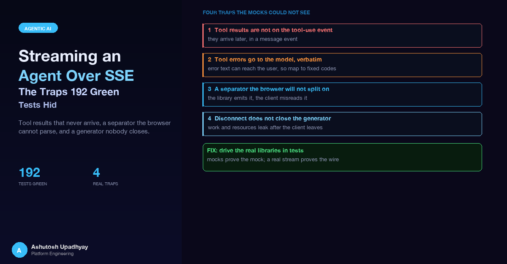

Tool results that never arrive, a line separator the browser cannot parse, and a generator nobody closes — found only when the tests drove the real libraries.
Updated 4 October 2026 with technical corrections.
The chat assistant for a UI-testing tool looked finished. The backend was a FastAPI route streaming a Strands agent to a browser over server-sent events. The unit suite had 192 passing tests. Then I opened the page and typed a question. The answer text streamed in nicely, but the "tool running" chips never turned into "tool done". In another run the browser received nothing at all, and the server log showed a perfectly healthy 200. And when I closed a tab mid-answer, the next message from the same user was told that another turn was still in progress.
None of these were exotic. Each one was a mismatch between what my code assumed about a library and what the library actually did, and each one was invisible to a test suite whose fakes agreed with my assumptions. This post walks through the four traps (where tool results live in a Strands event stream, what a tool's exception sends to the model, how sse-starlette frames bytes, and what it does not do when a client leaves), and then the testing approach that finally exposed them. The versions involved were Strands Agents 1.51 and sse-starlette 3.0.3. The general lesson about green tests that cannot fail is in the post on tests that cannot fail; this one is the streaming-specific version.
The flow is simple. A browser POSTs a message. The route takes a per-session turn lock, builds a Strands agent with the stored history, and returns an EventSourceResponse wrapping an async generator. That generator iterates agent.stream_async(...) and translates each Strands event into one of a handful of SSE event types: a session announcement, text deltas, tool status chips, a final "done" with a stop reason, and an error event. In its finally block it saves whatever partial assistant text exists and releases the turn lock.
Every piece of that is ordinary. The bugs lived in three assumptions I never checked against the libraries: that tool completion is visible on the tool-use event, that the framing bytes are what a browser expects, and that the response object cleans up my generator when the client goes away.
The text deltas in a Strands stream are easy to find. Tool progress is where I went wrong. The stream yields a current_tool_use field while the model is streaming its tool call, and I had written the translation as if that field carried the lifecycle of the call: name, input, and a status that would flip from running to done.
In Strands 1.51 that field holds only the tool name, the input and the tool-use ID. There is no status and no result on it. The result of a tool call arrives later, as a separate message event: a user-role message whose content contains a toolResult block carrying the tool-use ID, a status and the content. My code read a status that did not exist, so the "done" branch never fired. Tool chips stayed in "running" forever, and anything downstream that depended on a completed result (in my case a confirmation card the UI shows after a particular tool succeeds) was never emitted.
The fix is to keep a small map from tool-use ID to tool name when the call starts, and to resolve completion from the message events:
def translate(event, tool_names):
"""Map one Strands stream event to zero or more SSE events."""
out = []
# 1. A tool call is streaming: name/input/id only. Announce it as running.
cur = event.get("current_tool_use")
if cur and cur.get("toolUseId") and cur["toolUseId"] not in tool_names:
tool_names[cur["toolUseId"]] = cur["name"]
out.append(("tool", {"id": cur["toolUseId"], "name": cur["name"],
"status": "running"}))
# 2. The result arrives later, as a user-role message with toolResult blocks.
msg = event.get("message")
if msg and msg.get("role") == "user":
for block in msg.get("content", []):
tr = block.get("toolResult")
if not tr:
continue
ok = tr.get("status") == "success"
out.append(("tool", {
"id": tr["toolUseId"],
"name": tool_names.get(tr["toolUseId"], ""),
"status": "done" if ok else "error",
}))
return outTwo details matter. First, the toolResult status is a strict two-value field, which I come back to below. Second, a tool can succeed at the framework level and still report a failure inside its own JSON body, so I also peek at the parsed body for an error key and downgrade the chip to "error" in that case. The framework status says whether the call ran; the body says whether it worked.
While I was in the event loop I checked how a turn can end, because the "done" event carries a stop reason and I had only modelled the happy path. Hitting the output token limit does not look like a normal stop in Strands 1.51: the stream raises MaxTokensReachedException, so the generator needs an except for it that maps to a "max_tokens" stop reason. A guardrail stop is reported as guardrail_intervened, and a model refusal is a normal stop reason rather than an exception. Three different endings, three different code paths, and the UI needs to distinguish them. (The refusal case on Bedrock has its own quirks, covered in a refusal is an HTTP 200.)
stop = "end_turn"
try:
async for event in agent.stream_async(prompt):
for name, payload in translate(event, tool_names):
yield {"event": name, "data": json.dumps(payload)}
result = event.get("result")
if result is not None:
sr = getattr(result, "stop_reason", None) or "end_turn"
stop = {"guardrail_intervened": "guardrail"}.get(sr, sr)
except MaxTokensReachedException:
stop = "max_tokens"
yield {"event": "done", "data": json.dumps({"stop_reason": stop})}This one is less about streaming and more about what the stream shows the user and the model. When a function decorated with @tool raises, Strands catches it and turns it into a tool result whose text is Error: <ExceptionClass> - <message>, or just Error: <message> for a ValueError. That text goes to the model as the tool result, and the model is happy to repeat it to the user. An access-denied error from a cloud SDK call includes resource identifiers in its message. You do not want those in a chat window, and you do not want to depend on the model's discretion to leave them out.
The rule I adopted: no exception leaves a tool body. Every tool is wrapped, every failure maps to a short fixed code, and the detail goes to the server log instead.
import functools, json, logging
log = logging.getLogger(__name__)
def safe_tool(fn):
"""Return a fixed error code instead of letting an exception reach the model."""
@functools.wraps(fn)
def wrapper(*args, **kwargs):
try:
return fn(*args, **kwargs)
except NotFoundError:
return {"status": "error", "content": [{"text": json.dumps({"error": "NOT_FOUND"})}]}
except Exception:
log.exception("tool %s failed", fn.__name__) # detail stays server-side
return {"status": "error", "content": [{"text": json.dumps({"error": "TOOL_FAILED"})}]}
return wrapperNotice the returned dictionary: a top-level status and a content list. A tool that returns that shape is passed through by Strands verbatim, and that leads to a related trap I had hit shortly before in another agent.
The top-level status has exactly two legal values. In Strands the tool-result status type is Literal["success", "error"], and for Claude model IDs the Bedrock model class copies that status into the Converse toolResult, which accepts only those two values. A tool that returns "busy" or "needs_clarification" at the top level makes the next model call fail with a validation error. Carry richer states in the JSON body instead: a top-level "success" with {"status": "busy", ...} in the text. A green suite that mocked the model never caught this; the full story is in the post on tests that cannot fail.
One more Strands rule bit the multi-turn case. When you replay stored history into a new agent, the roles must alternate starting with user, and there must be no empty text blocks; Strands appends the new prompt without merging it into the previous message. If a turn produced no assistant text (a tool-only turn, or one that died early), persisting nothing leaves two consecutive user messages the next time around. The fix is to store a stand-in assistant text whenever a turn produced none, and to repair alternation when loading older sessions.
This is the one that produced a 200 response and a blank page. The SSE wire format is lines of event: and data: fields, with a blank line marking the end of an event. The spec allows \r\n, \r and \n as line endings. In sse-starlette 3.0.3 the default separator is \r\n; I confirmed it in the installed source, where the class attribute is DEFAULT_SEPARATOR = "\r\n" and the constructor only accepts those three values.
A native EventSource handles all three. But a chat that POSTs a JSON body cannot use EventSource (it only does GET), so the UI reads the fetch response body and parses it by hand. My hand-rolled parser split the buffer on \n and dispatched an event when a line was exactly empty. With \r\n framing, the "empty" line is actually "\r", so the dispatch condition never became true. The parser consumed every byte and dispatched zero events.
The fix has two halves, and I did both on purpose:
The client half is the more interesting one, because a lone \r at the end of a network chunk is ambiguous: it may be a complete line ending or the first half of \r\n. A correct splitter holds it back until the next byte arrives.
export async function readSse(
reader: ReadableStreamDefaultReader<Uint8Array>,
onEvent: (event: string, data: string) => void,
) {
const decoder = new TextDecoder();
let buf = "", evt = "", data: string[] = [];
const dispatch = () => {
if (data.length) onEvent(evt || "message", data.join("\n"));
evt = ""; data = [];
};
const line = (l: string) => {
if (l === "") dispatch();
else if (l.startsWith(":")) return; // comment / keep-alive ping
else if (l.startsWith("event:")) evt = l.slice(6).replace(/^ /, "");
else if (l.startsWith("data:")) data.push(l.slice(5).replace(/^ /, ""));
};
while (true) {
const { done, value } = await reader.read();
if (done) break;
buf += decoder.decode(value, { stream: true });
let start = 0, i = 0;
while (i < buf.length) {
const ch = buf[i];
if (ch === "\r") {
if (i + 1 >= buf.length) break; // lone \r at chunk end: wait
line(buf.slice(start, i));
i += buf[i + 1] === "\n" ? 2 : 1;
start = i;
} else if (ch === "\n") {
line(buf.slice(start, i)); start = ++i;
} else i++;
}
buf = buf.slice(start);
}
// At the end, a held-back \r still ends a line. Anything else left over is an
// unfinished event, which the spec says to discard rather than dispatch.
if (buf.endsWith("\r")) line(buf.slice(0, -1));
}Server side it is one argument:
return EventSourceResponse(gen, ping=15, sep="\n", background=BackgroundTask(release))That argument covers the dicts my generator yields, and the default ping. A ServerSentEvent object keeps its own separator (default \r\n), so if you yield those, or return one from a custom ping factory, pass sep="\n" to each of them too. That same call has the third argument, the one that fixes the next trap.
Here is the sequence I had assumed. The user closes the tab, the server notices, the response object closes my generator, the generator's finally runs, the partial reply is saved and the turn lock is released. Reading the sse-starlette source showed otherwise. On disconnect, the listener sets the response inactive and the task group is cancelled. The only place the response calls aclose() on the body iterator is after a send timeout. A plain client disconnect does not close it.
If the generator happens to be suspended at one of its own yield statements at that moment, which is the common state for a slow or departing client, nothing resumes it. Its finally block waits for garbage collection, which may be soon or may be much later. In the meantime the turn lock is still held, so the same user's next message gets a "turn in progress" response, and the partial answer has not been saved.
The response object does, however, run its background task after the task group exits, and it does so even when the client disconnected. That is the hook. Keep a handle to the generator and close it explicitly there:
gen = event_generator() # keep the handle
async def release():
try:
await gen.aclose() # fires the generator's finally, deterministically
except RuntimeError:
pass # "already running": its finally will run anyway
except Exception:
log.exception("aclose failed")
# Fallback: if the generator never started, aclose() was a no-op
# and its finally never ran, so release the lock directly.
if not state["released"]:
await release_lock_once()
return EventSourceResponse(gen, ping=15, sep="\n",
background=BackgroundTask(release))The lock release itself is idempotent and conditional: it removes the lock only if the stored token still matches the one this turn created, so a late release can never free a lock that a newer turn now holds. With that, the finally inside the generator does the saving and the releasing, and the background task guarantees that it runs. The fallback covers the case where the generator was never started, so there is no finally to run.
Every one of these bugs was invisible for the same reason: the tests replaced the piece that holds the behaviour. The agent was a fake whose stream_async yielded dictionaries shaped the way my translation code expected, so a translator reading a nonexistent status agreed with a fake that supplied one. The route was exercised through Starlette's TestClient, which reads the whole response, and my fake client parser was never the browser one. A mock of a library agrees with whatever the code under test assumes about it. That is what makes it a mock, and it is also why it cannot catch a wrong assumption.
The fix was not more tests of the same kind. It was replacing the fakes with the real thing one layer at a time.
Instead of mocking stream_async, I subclass the Strands Model base class and script what the model says. The real Agent then runs its real event loop: it parses the Converse events, invokes the real tool, builds the real toolResult message and emits the real stream events. The abstract methods on the base class in 1.51 are update_config, get_config, structured_output and stream.
from strands import Agent
from strands.models.model import Model
class ScriptedModel(Model):
"""Yields pre-recorded Converse events, one list per model call."""
def __init__(self, turns):
self._turns, self._n = turns, 0
async def stream(self, messages, tool_specs=None, system_prompt=None, **kw):
events = self._turns[self._n] if self._n < len(self._turns) else [
{"messageStop": {"stopReason": "end_turn"}}]
self._n += 1
for e in events:
yield e
def update_config(self, **kw): pass
def get_config(self): return {}
async def structured_output(self, *a, **kw): pass
TOOL_THEN_ANSWER = [
[ # model call 1: ask for a tool
{"messageStart": {"role": "assistant"}},
{"contentBlockStart": {"contentBlockIndex": 0,
"start": {"toolUse": {"toolUseId": "t1", "name": "list_items"}}}},
{"contentBlockDelta": {"contentBlockIndex": 0,
"delta": {"toolUse": {"input": "{}"}}}},
{"contentBlockStop": {"contentBlockIndex": 0}},
{"messageStop": {"stopReason": "tool_use"}},
],
[ # model call 2: answer after the tool result
{"messageStart": {"role": "assistant"}},
{"contentBlockDelta": {"contentBlockIndex": 0, "delta": {"text": "Done."}}},
{"contentBlockStop": {"contentBlockIndex": 0}},
{"messageStop": {"stopReason": "end_turn"}},
],
]
agent = Agent(model=ScriptedModel(TOOL_THEN_ANSWER), tools=[list_items],
callback_handler=None)Run that through the real route, read the raw SSE bytes, and assert that a "running" chip is followed by a "done" chip. With the original translation that assertion fails immediately, which is the first time any test of mine had failed for this bug. The same scripted model, with a tool that raises, proves the fixed error code appears and the exception text does not. A third script that ends with a max_tokens stop reason exercises the token-limit path. Each of them is a few lines of data rather than a page of mocking.
The client splitter is a pure module, so I bundled it with esbuild and tested it directly under vitest, feeding it bytes produced by the server library itself: ServerSentEvent(...).encode(), not strings I typed by hand. Then I replayed the same byte string through the parser at many chunk sizes, including one byte per chunk, and with a cut placed immediately after every \r. Every split must yield the same events.
test.each([1, 2, 3, 7, 64, 4096])("same events at chunk size %i", async (n) => {
for (const sep of ["\r\n", "\n", "\r"]) {
const bytes = encode(events, sep); // produced by the real server library
expect(await parse(chunk(bytes, n))).toEqual(events);
}
});
test("cut after every CR", async () => {
const bytes = encode(events, "\r\n");
for (const cut of crPositions(bytes)) {
expect(await parse([bytes.slice(0, cut + 1), bytes.slice(cut + 1)])).toEqual(events);
}
});That second test exists purely for the held-back \r case. A splitter that eagerly treats every \r as a line end will turn one \r\n into a line plus a phantom empty line, and dispatch early.
This was the hardest to get right. Starlette's TestClient runs the app to completion even if the test stops reading, so a client that "disconnects" there still has the whole stream delivered and the generator finishes normally. It can never exercise the leak. The test has to talk ASGI directly: call await app(scope, receive, send), make receive return the request body first and then {"type": "http.disconnect"}, and make send slow so that the generator is parked at its own yield when the disconnect arrives.
There is a second trap inside the test. asyncio.run() calls shutdown_asyncgens() when it exits, which closes any async generator still lying around, and that silently performs the cleanup your fix is supposed to perform. A test that asserts after asyncio.run returns will pass with the fix removed. So the assertions have to happen inside the running loop, at the moment app() returns, and the test should hold an extra reference to the generator to model garbage collection arriving late.
HELD = []
async def scenario():
n = 0
async def receive():
nonlocal n; n += 1
if n == 1:
return {"type": "http.request", "body": body, "more_body": False}
await asyncio.sleep(0.02)
return {"type": "http.disconnect"}
async def send(msg):
if msg["type"] == "http.response.body":
await asyncio.sleep(0.05) # slow client: generator parks at its yield
# Keep the generator alive to model late GC.
real = EventSourceResponse
def capture(content, *a, **k):
HELD.append(content)
return real(content, *a, **k)
with patch("myservice.stream.EventSourceResponse", side_effect=capture):
await asyncio.wait_for(app(scope, receive, send), timeout=5)
# Assert HERE, inside the loop, before shutdown_asyncgens can tidy up.
assert lock_is_released(session_id)
assert partial_reply_saved(session_id)
asyncio.run(scenario())With the background aclose() removed, this test fails on the lock assertion. With it present, it passes. That is the property a regression test is supposed to have, and the earlier suite had none like it. I also ran the disconnect scenario in a loop to check that release was reliable rather than lucky, and added a variant where the client disconnects before the stream even starts.
Last, the concurrency check: httpx.AsyncClient(transport=ASGITransport(app)) with asyncio.gather over two sessions, each with its own scripted model. It confirms that events do not cross between streams and that one user's turn lock does not block another's. It is cheap, and it exercises the real routing and the real response objects at the same time.
| Trap | What the fake tests assumed | What the real library does | How it was caught |
|---|---|---|---|
| Tool completion | Status on the tool-use event | Result arrives in a message event as toolResult | Scripted Model under the real Agent |
| Separator | Any line ending works | Default is \r\n; the hand-written parser needed \n | Parser tested on bytes from the library's own encoder |
| Disconnect | Response closes the generator | Only a send timeout closes it | ASGI-level test asserting inside the loop |
| Tool status | Any string is a status | Only success or error reach Converse | One test driving every return path |
send, and assert before asyncio.run can clean up?None of these is expensive. The scripted model is a handful of lines; the splitter test is a loop. What they share is that the thing being tested is the thing that ships.
The scripted model still encodes my memory of what the Converse event stream looks like. The natural next step is recorded-stream contract fixtures: capture real event streams once from a live model (a plain answer, a tool call, a tool error, a token-limit stop) and replay them as the scripted model in CI. Then every upgrade of Strands or sse-starlette runs against recordings of reality instead of my recollection of it, and a changed event shape fails a test before it reaches a user.
On the user-facing side, SSE defines an answer to dropped connections: event IDs and the Last-Event-ID header. EventSource sends that header automatically when it reconnects; a fetch-based client like this one has to keep the last ID itself (in session storage, to survive a refresh) and send it, and the server has to keep recent events to replay. Built that way, a tab refresh in the middle of a long answer goes from "start again" to "carry on". It is a UX improvement on top of a stream that now closes cleanly, which is the right order to build them in.
message events containing toolResult blocks; read completion from there.MaxTokensReachedException, guardrail stops report guardrail_intervened, and refusal is a normal stop reason. Handle each explicitly.success or error; carry richer states in the JSON body.user and contain no empty text blocks. Store a stand-in assistant text when a turn produced none.\r\n by default. Set sep="\n" on the server and make the client accept \r\n, \r and \n, holding back a trailing \r across chunks.aclose() your generator on client disconnect, only on a send timeout. Keep a handle and await gen.aclose() in a background= task, which still runs after a disconnect, with a release fallback.Model subclass under the real agent, bytes from the library's own encoder, and an ASGI-level disconnect asserted inside the event loop. TestClient and asyncio.run's generator cleanup both hide the bug.Disclaimer: The views and opinions expressed in this post are my own and do not represent those of my employer or any organisation I am associated with.